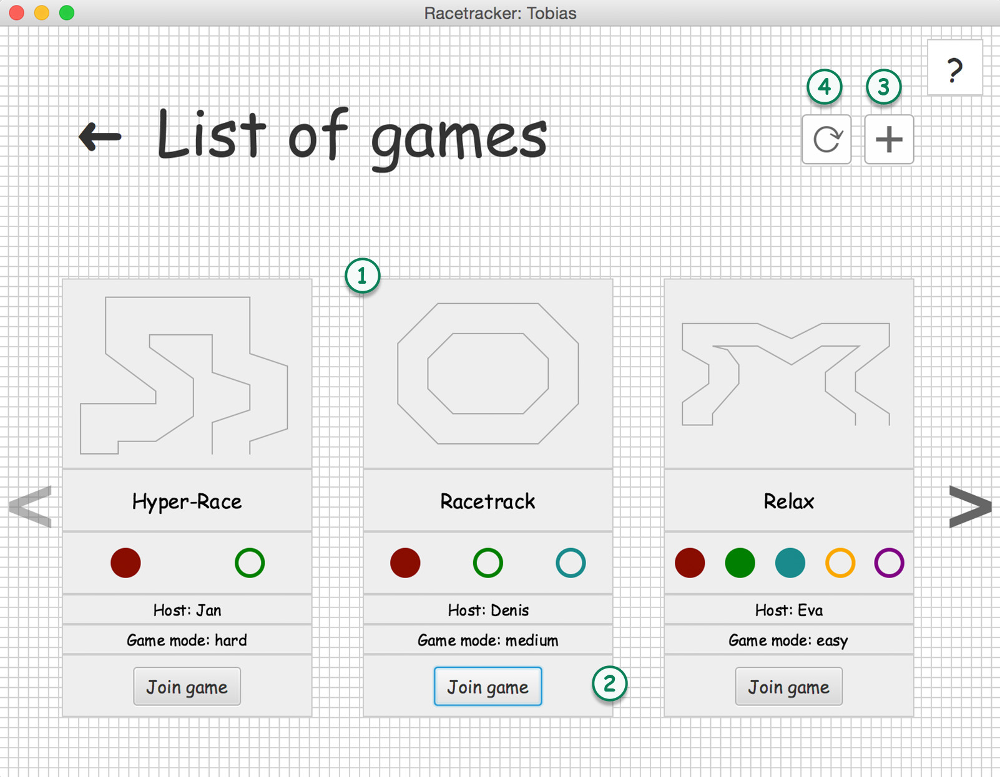

List of games
In this scene you will see a list of all available games on the server. This scene will only be updates if you press the reload button.
You can also create new games or join existing ones.

-
Each of those cards represent one game.
First you will see a preview of the map. Second the game name will be shown.
As the third column you can get an overview about how many players can join the game (number of circles) and how many players have already joined the game (number of filled circles). Next there are two columns displaying the host name and the play mode*. The last column gives you the oporunity to 'join the game'.
-
Use this button to join a particular game. (If it doesn't work, please use the reload button.)
-
Create a new game.
-
Reload button; use the reload button to refresh the list of games and see the updated list of games.
Play modes: There are three different play modes you can play. Those modes are set during the creation of the game.
EASY; forces every player to move within 30 seconds.
MEDIUM; forces every player to move within 10 seconds.
HARD; forces every player to move within 5 seconds.